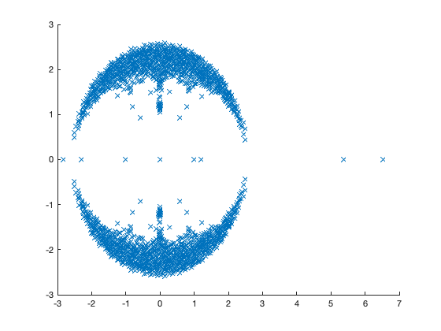
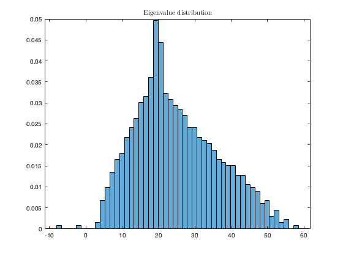
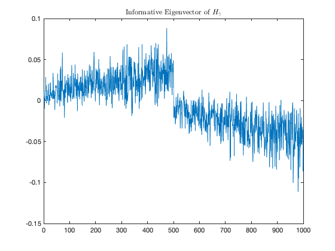

Section 7.2: From dense to sparse graphs: a different approach.
This page contains simulations in Section 7.2.
Contents
Complex spectrum of the non-backtracking matrix
close all; clear; clc n = 1000; p_in = 12; p_out = 1; cs = [1/2 1/2]'; k = length(cs); A11 = binornd(1,p_in/n,n*cs(1),n*cs(1)); A11 = tril(A11,-1)+tril(A11,-1)'; A22 = binornd(1,p_in/n,n*cs(2),n*cs(2)); A22 = tril(A22,-1)+tril(A22,-1)'; A12 = binornd(1,p_out/n,n*cs(1),n*cs(2)); A = [A11 A12; A12' A22]; A = A - diag(A); % get the (directed) edges from A [I,J] = ind2sub(size(A),find(triu(A,1)>0)); E = [I,J;J,I]; m = length(E); N = zeros(m,m); for i=1:m for j=1:m if E(i,2)==E(j,1) && E(i,1)~=E(j,2) N(i,j) = 1; end end end eigs_N = eig(N); figure hold on plot(eigs_N,'x')
Eigenvalue-eigenvector pairs of Bethe Hessian  under DC-SBM
under DC-SBM
close all; clear; clc n = 1000; cs = [0.5, 0.5]; k = length(cs); j1 = [ones(n*cs(1),1);zeros(n*cs(2),1)]; j2 = ones(n,1)-j1; J = [j1, j2]; p_in = 35; p_out = 5; q = [linspace(.2,.9,n/2) linspace(.2,.9,n/2)]; C = [p_in, p_out; p_out, p_in]/n; P = diag(q)*(J*C*(J'))*diag(q); gamma = sqrt( (p_in + p_out )/2); %gamma = (p_in + p_out )/(p_in - p_out ); A_cell = cell(k); for i = 1:k tmp = binornd(1,P(sum(cs(1:(i-1)))*n+1:sum(cs(1:i))*n,sum(cs(1:(i-1)))*n+1:sum(cs(1:i))*n),n*cs(i),n*cs(i)); tmp = tril(tmp,-1)+tril(tmp,-1)'; A_cell{i,i} = tmp; for j = i+1:k A_cell{i,j} = binornd(1,P(sum(cs(1:(i-1)))*n+1:sum(cs(1:i))*n,sum(cs(1:(j-1)))*n+1:sum(cs(1:j))*n),n*cs(i),n*cs(j)); end end A = [A_cell{1,1} A_cell{1,2}; A_cell{1,2}' A_cell{2,2}]; A = A - diag(A); D = diag(A*ones(n,1)); H = (gamma^2 - 1)*eye(n) + D - gamma*A; [V_H,eigs_H] = eig(H,'vector'); [~,ind] = sort(eigs_H); eigs_H = eigs_H(ind); V_H = V_H(:,ind); figure histogram(eigs_H, 50, 'Normalization', 'pdf', 'EdgeColor', 'white'); title('Eigenvalue distribution', 'Interpreter', 'latex') figure plot(V_H(:,2)) title('Informative Eigenvector of $H_{\gamma}$', 'Interpreter', 'latex') 